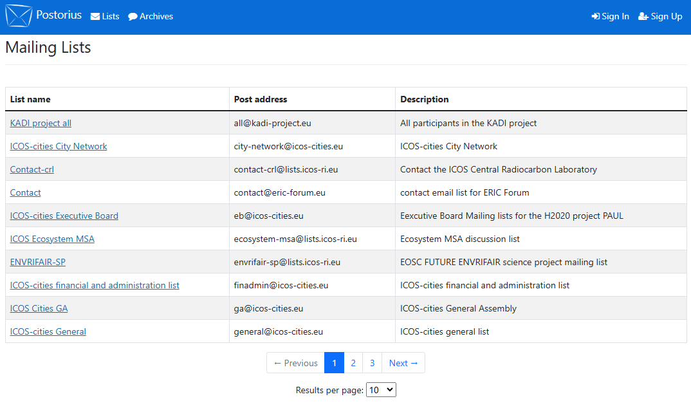

Subscribe to a mailing list without an account
You can use the ICOS Mailing Lists home page without having account to subscribe to public mailing lists. You will first be presented with an overview of all published mailing lists on the ICOS mailing list server, as shown below.

You can subscribe by clicking on one of the list names. Fill out the form, shown below, and then click the Subscribe button. You will then usually receive an email asking you to confirm your email address. To confirm your address, just click Reply on the email, and then send it back to the server.
If the list membership is unmoderated, you will receive an immediate notification email confirming your subscription; otherwise, you will have to wait for the list moderator to approve your membership.